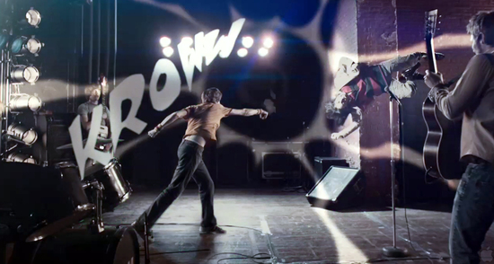
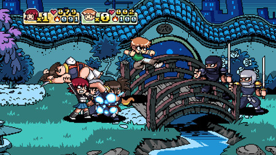
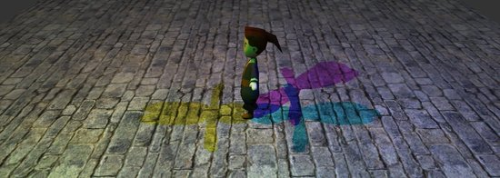
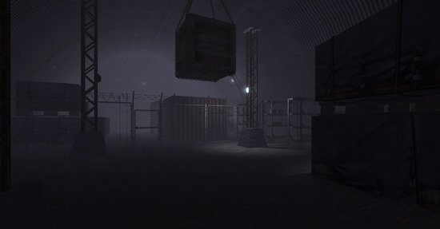

Jan 27, 2011 · 4 minute read · Comments
Hobbies

Revenge of the Titans es un tower defense desarrollado por la compañía independiente Puppy Games. Me hice con él gracias al Humble Indie Bundle, ese magnífico pack de cinco pequeñas grandes obras al precio que el comprador estimase oportuno. No todos los días lanzan juegos multiplataforma sin DRM y durante las últimas semanas lo he estado disfrutando en mi querida Ubuntu. Sigan leyendo porque el “jueguecito” tiene una propuesta de lo más interesante.

¡Los titanes han vuelto!
Los titanes invadieron La Tierra tiempo atrás y en el matamarcianos Titans Attack (que no he probado) los humanos les hicimos frente. Finalmente han conseguido aterrizar, llegan clamando venganza y dispuestos a reducir nuestro planeta a cenizas. Este es el planteamiento de Revenge of the Titans, un tower defense que destila personalidad.
Revenge of the Titans ofrece tres modos de juego: Campaing, Endless y Survival. En el modo campaña comenzamos defendiendo nuestro planeta y después perseguimos a los titanes por el Sistema Solar. Cada planeta es una campaña compuesta de un puñado de misiones. En el modo interminable debemos atravesar una serie de encuentros con los titanes en creciente dificultad. Finalmente, el modo supervivencia consiste en un único escenario en el que no paran de aparecer titanes. Puede que la campaña no sea extremadamente larga pero la dificultad y los distintos modos de juego aportan longevidad extra. ¡Ah, además hay logros!

Tower defense for the win
En cada escenario debemos acabar con las oleadas de titanes que se ciernen sobre nuestra base central. Es imprescindible recolectar y administrar mineral e invertirlo en construir torretas entre otras estructuras para ponérselo complicado a los invasores. A primera vista puede parecer que desde la vista cenital controlamos el territorio pero, cuando tenemos varios frentes de combate abiertos, las misión se hace cuesta arriba. Conforme avanzamos no es extraño tener que repetir misiones, menos mal que su dinamismo hace que la frustración no aumente demasiado. Cada partida es diferente y no vale de nada memorizar que un enemigo especial entre por un punto determinado puesto que va cambiando. Revenge of the Titans es un reto divertido que nos obligará a buscar la mejor aproximación para cada situación.
Entre misiones podemos aprovechar para invertir recursos en mejoras tecnológicas. El árbol de investigación tiene unas dimensiones aceptables y le da más profundidad al juego. No solo nos encargaremos de gestionar el mineral durante la batalla sino que tomaremos la delicada decisión de investigar en mejoras de armamento o ahorrar para el futuro. Creedme, los recursos son extremadamente limitados.

El encanto de lo Indie
El estilo visual de Revenge of the Titans es harto simple pero nos encandilará al segundo. Todo tiene su encanto: desde los propios titanes pasando por la interfaz hasta nuestros dos consejeros particulares. Una mezcla entre lo tecnológico, el dibujo animado y lo retro. Como podéis ver en las capturas, no destaca en efectos ni innovación excesiva pero a mí me tiene ganado, ¿qué le voy a hacer? Es puro amor.
No obstante, el juego presenta ciertos problemas en su apartado técnico que no puedo dejarme en el tintero. En primer lugar hay que reconocer sus serios problemas de rendimiento. Cuando comienzan a ocurrir muchas cosas en el escenario el juego no responde todo lo bien que debería y la interacción con el usuario se vuelve un pelín tosca. Sería comprensible si manejase un gran número de elementos 3D pero para un juego relativamente sencillo en 2D es grave. El segundo problema es menos crítico y más subjetivo. Hubiese preferido que los indicadores de las unidades fuesen más claros.

En resumen
No quiero que se queden con una mala impresión de Revenge of the Titans por culpa del último párrafo. Es un juego excelente, muy apropiado para pequeños ratos libres. Divertido, gracioso y con un planteamiento que incita a seguir jugando lo cual es decir mucho. El problema es que duele sobremanera pagar cerca de 13€ por un producto sencillo estando disponibles verdaderos triples A en plataformas como Steam. El Humble Indie Bundle fue una maravillosa oportunidad para adquirirlo a mejor precio, quizás dentro de poco hagan rebajas. Bueno, les dejo que ahora le toca el turno a Braid.
Jan 24, 2011 · 2 minute read · Comments
Hobbies

Había algunas películas decentes en la cartelera y gracias a unos cartuchos vacíos de impresora las entradas nos iban a salir gratis por lo que la situación no pintaba nada mal. Camino a la libertad de Peter Wier fue la opción escogida y es que el director de El club de los poetas muertos y de El show de Truman daba bastante confianza. A continuación leerán (o cerrarán la pestaña del navegador) una pequeña reseña firmada por un pésimo crítico de cine.
Camino a la libertad es un drama basado en la novela de Slavomir Rawicz “The long walk” que a su vez toma como fuente de inspiración hechos reales, igualito que las películas de Antena 3 un domingo por la tarde. Está ambientada en la Segunda Guerra Mundial y narra la historia de un grupo de presos fugados de un campo de trabajo soviético en plena Siberia. Mientras el frío cala en los huesos del espectador, los prófugos deben atravesar miles de kilómetros a pie hasta la frontera soportando mil penurias.
Desde las montañas heladas hasta el desierto abrasador se interponen entre los sufridos viajeros y la libertad. Como hemos visto en otras muchas películas, en los momentos verdaderamente difíciles salen a reducir los instintos animales necesarios para sobrevivir. Cualquier hombre en esas circunstancias puede ser tan peligroso como un lobo acorralado. Es cierto que es un tema ya visto gana en interés por el excelente trabajo de fotografía. Tanto la belleza como la dureza de los variados entornos quedan perfectamente plasmadas en la cinta.
Considerable duración (133 minutos) teniendo en cuenta que sólo muestra una buena caminata, todo un atrevimiento. Para mi sorpresa no se hizo aburrida y, aunque tiene ciertos altibajos, la tensión no para de crecer. Olvidaos de acción a raudales o cualquier tipo de excesos, es una película sobria que cumple su cometido. Quizás podría achacarle la sensación de que algunas escenas no están bien enlazadas pareciendo un collage un poco caótico. El reparto no es muy conocido exceptuando a Collin Farrel y a Ed Harris, no me ha llamado la atención el trabajo de ninguno ni en el buen ni en el mal sentido.
En definitiva, una buena película con un planteamiento distinto a lo que estamos acostumbrados a ver en cartelera. Manda narices pagar por ir a ver verdaderos truñacos y una vez que me sale el cine gratis merecía la pena.
Jan 23, 2011 · 3 minute read · Comments
Games development
Hace mes y medio comencé a utilizar el sistema de gestión de tareas de Red Iris para organizarme. Es mucho mejor marcarse tareas realizables en poco tiempo que trabajar con un plan a largo plazo. Por supuesto, estos objetivos deben estar encaminados hacia el plan global pero he comprobado que en proyectos pequeños se es más productivo con tareas concretas. Recientemente he ido cubriendo los objetivos cumplidos en forma de artículos publicados o sistemas desarrollados. A continuación, comento el camino a seguir en ambas ramas de mi proyecto.
IberOgre
- Difusión: IberOgre ha conseguido lectores principalmente desde Twitter pero va siendo hora de ampliar miras. Debo emprender una pequeña campaña de difusión por foros de desarrolladores. Los objetivos principales serían comunidades de hispanohablantes y sitios directamente relacionados con Ogre en busca de los usuarios que hablen español.
- Contacto con la comunidad: creo que la comunicación con la comunidad es buena ya que he recibido sugerencias, consejos y reportes de errores. No obstante, estoy decidido a mejorarla. Para ello le daré más actividad a la cuenta de Twitter y haré más visibles todos los medios de comunicación con el proyecto (correo, blog, etc).
- “Inicialización del motor”: desde el comienzo está pendiente un artículo sobre la inicialización de Ogre, imprescindible para los principiantes. Este pequeño objetivo tiene la máxima prioridad.
- “Animación”: artículo que repase el subsistema de animación de Ogre. Nos centraremos principalmente en Skeletal Animation pero mencionaremos el resto de técnicas disponibles.
- “Materiales”: artículo que desgrane el sistema de materiales de Ogre. Aprenderemos a aplicar texturas y efectos sencillos a los objetos de nuestra escena.
Tengo más objetivos en mente pero primero nos centraremos en un subconjunto de ellos. Si algo estoy aprendiendo es que no se puede abarcar demasiado de buenas a primeras.
Sion Tower
- Sistema de colisiones: he estudiado bibliotecas como Bullet y ODE pero son proyectos demasiado grandes (matar moscas a cañonazos). Prefiero desarrollar mi pequeño subsistema de detección y respuesta de colisiones. De esta forma aprenderé las bases de las técnicas disponibles. Es posible que decida publicar el sistema de forma independiente ya que es un elemento muy solicitado en el foro de Ogre.
- Sistema de niveles: sigo estudiando la forma de cargar los niveles a partir de ficheros. Es probable que acabe utilizando el formato DotScene como ya mencioné pero tengo que manejar información que no contempla dicho formato. Nombre y descripción del nivel, icono, música que sonará, formas que componen el modelo de colisiones de los objetos… Sin duda, un tema peliagudo.
- Demo técnica: es imprescindible llegar a la fase local del concurso con una demo del juego. No importa que no tenga los menús, efectos bonitos y demás accesorios prescindibles. Para esa fecha deben poder cargarse los niveles por los que controlemos al personaje principal. Lo ideal sería tener una Inteligencia Artificial básica implementada para los enemigos.
Periodo de exámenes
Por último, me gustaría comentar que en época de exámenes es complicado encontrar tiempo para trabajar en el proyecto y llevar una vida social al mismo tiempo. Desde hace una semana IberOgre y Sion Tower están parados aunque calculo que en muy pocos días retomaré el trabajo con intensidad e ilusión.
Infinitas gracias a todos los que me muestran su apoyo con el proyecto.
Jan 19, 2011 · 2 minute read · Comments
Hobbies
Estos días he estado viendo varias películas que tenía pendientes, quizás por la falta de series durante las vacaciones. Es curioso como uno se acostumbra a visionados de episodios cortos, luego es más complicado sentarse a ver algo durante más de dos horas. Scott Pilgrim contra el mundo ha sido uno de los largometrajes que más repercusión han tenido en la red el pasado año junto a Inception o The social network y no me extraña teniendo en cuenta su temática. Como veremos a continuación, el trabajo de Edgar Wright y Michael Bacall es una aglomeración de referencias al mundo de los videojuegos, del cómic y de la música.
Scott Pilgrim (Michael Cera) es el bajista del grupo Sex Bob-omb, sale con una colegiala bastante más joven que él, por lo que es objeto de burla de sus compañeros. Sin esperarlo, conoce a Ramona Flowers, una chica de pelo rosa de la que queda automáticamente enamorado. Para su sorpresa, Ramona está dispuesta a salir con él pero hay un pequeño problema que ha de solucionar. Scott deberá derrotar a los 7 ex-novios malvados de Ramona al más puro estilo Mortal Kombat. Así comienza esta hilarante y surrealista aventura que homenajea de forma espectacular al mundo de las recreativas y los grupos de rock clásicos entre otras decenas de iconos.

Me gustaría advertir que Scott Pilgrim hay que tomársela como lo que es, una comedia desenfadada y ridícula con la que muchos nos sentiremos identificados de una forma u otra. Combates absurdos, escenas imposibles y efectos propios de un videojuego de 16 bits estarán a la orden del día. Eso sí, se deja disfrutar a lo grande aunque en determinados momentos puede hacerse repetitiva. El número de referencias es abrumador y como homenaje la película es estupenda, seguro que se me ha escapado más de una. ¡Cuidado! Si no te gustan los temas mencionados es muy probable que te parezca un truñaco impresionante.

Scott Pilgrim vs The world ha conseguido relanzar el cómic en el que se basa y el culto que lo rodea. Incluso se ha desarrollado un videojuego beat"em up de scroll lateral con estilo retro en X-Box Live y Playstation Store. Esta adaptación retoma la estética del cómic y tiene puntuaciones notables y ahora mismo ronda los 10€ por lo que si me pilla un día de cartera suelta le daré la oportunidad.
Jan 17, 2011 · 3 minute read · Comments
Games development
Alguna ventaja tenía que tener desarrollar un proyecto de cierto tamaño compuesto de dos partes (IberOgre y Sion Tower). Cuando estoy atascado en uno le doy un impulso al otro y eso es precisamente lo que me ha pasado los últimos días con el sistema de colisiones de Sion Tower. Tras horas de lectura, aprendizaje y frustración decidí aparcar el asunto y dedicarme a la wiki, la cual estaba algo solitaria. El resultado ha sido un extenso artículo sobre el sistema de iluminación, sombras, niebla y fondos de Ogre. Sigue leyendo para conocer los detalles sobre el artículo.

Sombras
Repaso por las técnicas de sombreado de Ogre 3D en el que descubrirás las sencillas herramientas que el motor pone a tu alcance. Ogre nos tiene acostumbrados a poder tomar el control de la situación si así lo deseamos y en esta ocasión no podía ser de otra forma. Existen varias técnicas de sombreado que difieren en la calidad y en el coste computacional. Es importante que aprendas a elegir cual es la apropiada para cada situación. Incluso puedes seleccionar qué entidades proyectan sombras para ahorrar recursos si tus escenas están excesivamente pobladas.
Iluminación
¿Quieres conseguir el efecto de los faros de un coche? Aquí aprenderás a hacerlo. Ogre pone a disposición del desarrollador 3 tipos distintos de fuentes de luz. En esta sección aprenderás la utilidad de cada uno de ellos. Utilizarlos es muy sencillo, ¡lo complicado es seleccionar cuidadosamente colores, posiciones e intensidades para alcanzar el efecto deseado! Aprenderás a crear, gestionar y destruir fuentes de luz de cada tipo disponible. Incluso detallamos conceptos aparentemente complejos como la reflexión difusa y especular. Lo cierto es que ha sido complicado recopilar, adaptar y desgranar toda la información ya que estaba muy diseminada por la red.

Niebla
Estoy convencido de que todos conocéis la técnica de la niebla en el mundo de los videojuegos. Se dispone de una niebla clara u oscura que oculta la escena progresivamente a medida que se aleja da la cámara. Esto nos permite reducir el coste del renderizado de la escena y hará el videojuego compatible con una gama más amplia de equipos si así lo deseamos. En cualquier caso, puede que tu objetivo sea potenciar la ambientación terrorífica de tu survival horror haciendo que el personaje no vea más allá de dos metros mientras camina por un tétrico cementerio.
Fondos
Casi todos los videojuegos que muestran entornos abiertos tienen algún tipo de fondo como un cielo azul poblado de nubes. Nada de efectos de partículas volumétricas, en la mayoría de ocasiones se trata de una simple figura que rodea la escena con una textura en su interior. En este aparado aprenderás a gestionar y configurar estas técnicas llamadas SkyBoxes, SkyDomes y SkyPlanes (según el tipo). Es tremendamente sencillo y los resultados son más que satisfactorios.
Pronto más y mejor
Como es costumbre, el extenso artículo finaliza con un ejemplo que prácticamente abarca todo el contenido. Creo que, junto con la gran cantidad de esquemas explicativos, los conceptos repasados quedan bastante claros. No obstante, si alguien no comprende algo le agradecería infinitamente que contactase conmigo para mejorar el artículo.
Eso es todo por hoy, próximamente publicaremos más artículos de calidad gracias a vuestra colaboración.